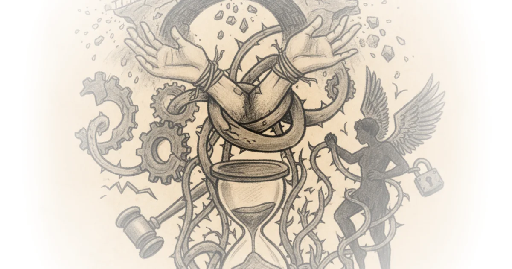
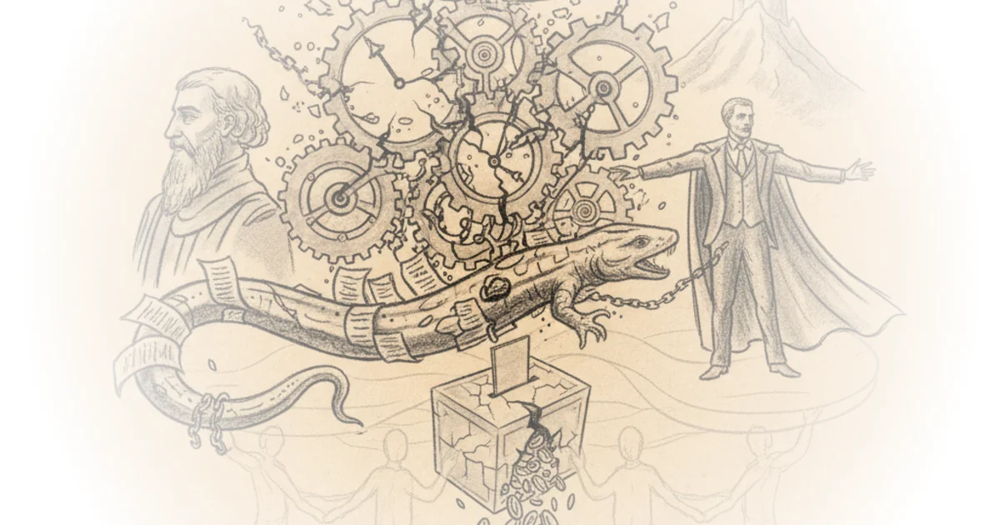
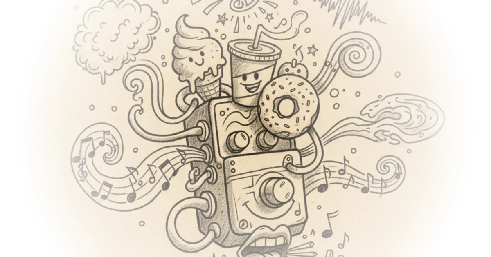
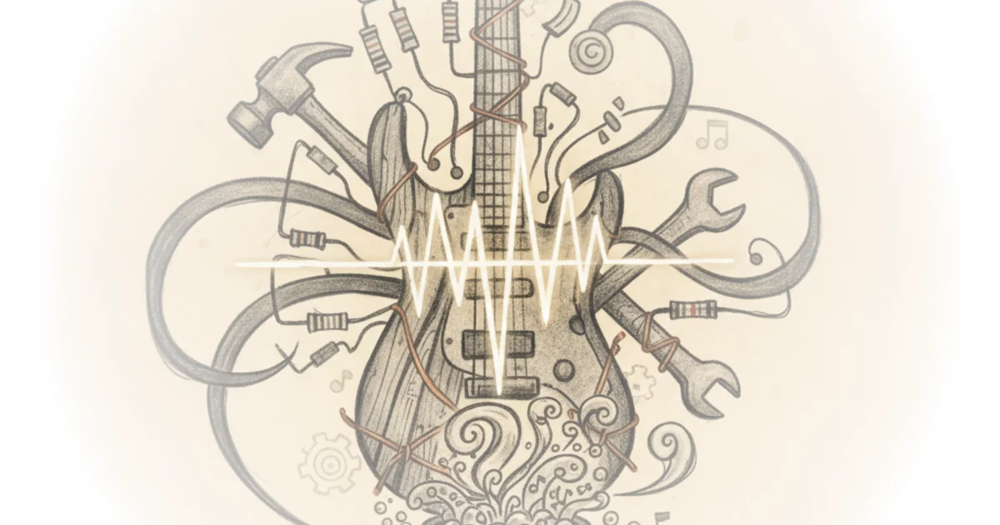

Andrew Callaghan: Andrew’s Theory of Radicalization Doom Scroll · Doom Scroll ·Apr 2, 2025 · 71 min read · Political Strategy
The big problem with Brazil's oldest archaeological site [Feat. North02] Stefan Milo · Stefan Milo ·Apr 2, 2025 · 15 min read · History
Europe's Undeciphered Prehistoric Tablets - Enigmatic Artefacts Stefan Milo · Stefan Milo ·Mar 24, 2025 · 14 min read · History
Mars Has a Fatal Flaw - And No-one Has the Solution Derek Muller · Veritasium ·Mar 20, 2025 · 39 min read · Science
How this helicopter survived 1004 days on Mars, then disappeared Derek Muller · Veritasium ·Mar 20, 2025 · 24 min read · Science
Finding The Right Delay Pedal For You | A Guide To JHS Delay Pedals Josh Scott · JHS Pedals ·Mar 19, 2025 · 13 min read · Music
Ezra Klein: Abundance Politics Doom Scroll · Doom Scroll ·Mar 18, 2025 · 52 min read · Political Strategy
Playing 16 Pedals and Losing Our Minds (Fender, Behringer, Danelectro, Walrus, EHX, and More!) Josh Scott · JHS Pedals ·Mar 12, 2025 · 16 min read · Music
You Are Witnessing the Death of American Capitalism Benn Jordan · Benn Jordan ·Mar 9, 2025 · 40 min read · Political Strategy
The most debated artefact of all time - Enigmatic Artefacts Stefan Milo · Stefan Milo ·Mar 5, 2025 · 19 min read · History
Adam Friedland: Behind the Adam Friedland Show Doom Scroll · Doom Scroll ·Mar 4, 2025 · 56 min read · Political Strategy
Episode #223 ... Religion and the duck-rabbit - Kyoto School pt. 3 Stephen West · ·Mar 3, 2025 · 34 min read · Culture
Prehistoric Europe was absolutely metal Stefan Milo · Stefan Milo ·Feb 26, 2025 · 22 min read · History
Terence Tao continuing history’s cleverest cosmological measurements Grant Sanderson · ·Feb 23, 2025 · 26 min read · Writing & Craft
Episode #222 ... Dostoevsky - Love in The Brothers Karamazov Stephen West · ·Feb 18, 2025 · 41 min read · Culture
Briahna Joy Gray: Democrats Can’t Do Anything Doom Scroll · Doom Scroll ·Feb 18, 2025 · 82 min read · Political Strategy 
Ancient Apocalypse season 2 is nonsense Stefan Milo · Stefan Milo ·Feb 17, 2025 · 35 min read · History
Europe Reels At New World Order Novara Media · Novara Media ·Feb 14, 2025 · 71 min read · Political Strategy
February Q&A w/ Michael and Ash Novara Media · Novara Media ·Feb 10, 2025 · 53 min read · Political Strategy
Quinn Slobodian: What is Neoliberalism? Doom Scroll · Doom Scroll ·Feb 5, 2025 · 67 min read · Political Strategy 
The Most Important Budget Line Ever Made Josh Scott · JHS Pedals ·Feb 5, 2025 · 16 min read · Music 
How To Build The JHS Pedals 3-Series Fuzz - Short Circuit Episode: 21 Josh Scott · JHS Pedals ·Feb 3, 2025 · 56 min read · Music 
Will Menaker: The End of the Left + Liberal Alliance Doom Scroll · Doom Scroll ·Jan 22, 2025 · 45 min read · Political Strategy
How To Build A Hybrid Germanium-Silicon Fuzz Face - Short Circuit Episode: 20 Josh Scott · JHS Pedals ·Jan 16, 2025 · 45 min read · Music


![The big problem with Brazil's oldest archaeological site [Feat. North02]](../../images/217c2974-f2fc-4cb9-8c4f-d9fbe4010a2d.webp)